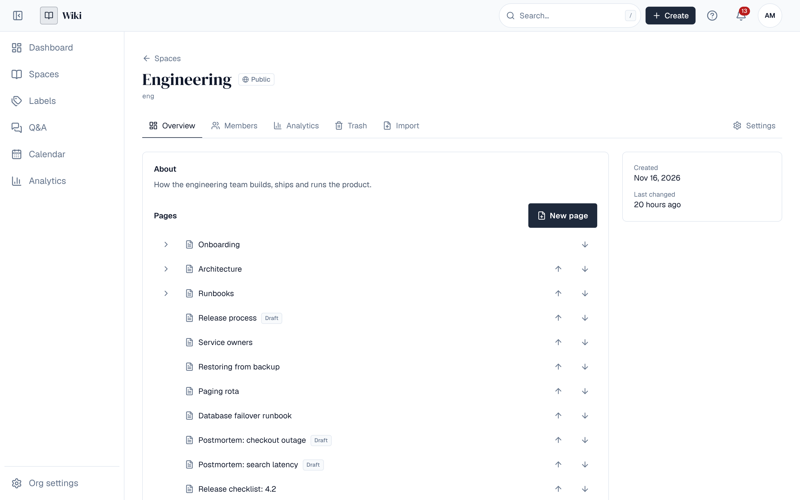
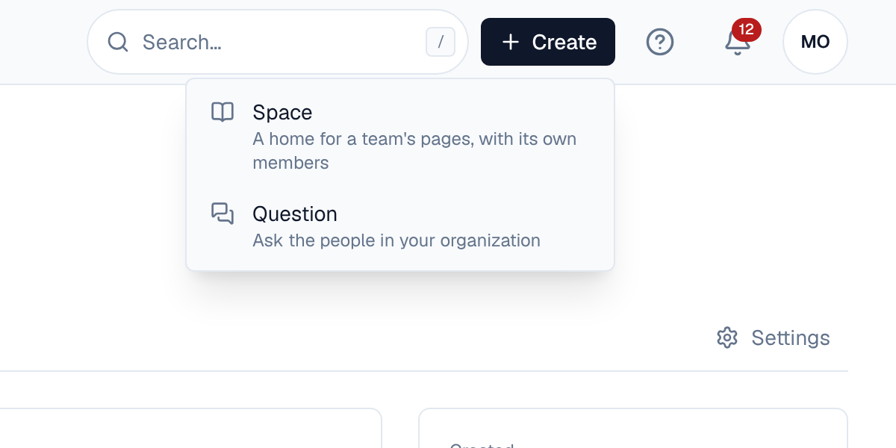

1. Overview
Every screen of the Wiki has the same frame: a sidebar on the left and a header across the top. The Wiki's home is the Spaces list: opening the Wiki's address without a path takes you there.

2. The sidebar
| Entry | What it opens |
|---|---|
| Dashboard | Your dashboard: the newest posts of the blogs you follow and of your spaces, and widgets from plugins. |
| Spaces | Every space you can see. See Spaces. |
| Blogs | Posts from every space's blog you can read. See Space blogs. |
| Labels | Every label in use, and the pages that carry each one. See Labels and feedback. |
| Q&A | Questions and answers for your organization, when you may read them. See Q&A. |
| Calendar | Space calendars, scheduled publishes and review-by dates. See Calendar. |
| Analytics | Who reads what. Shown only when your licence includes analytics. See Analytics. |
| Org settings / Settings | At the bottom, for people who manage the installation. See Settings reference. |
Pages that installed plugins add are listed under Plugins in the sidebar. The button at the top left folds the sidebar. On a phone the sidebar opens from the menu button instead.
3. The header
- Search finds spaces, pages, labels and questions. / or Ctrl+K opens it from anywhere. See Search.
- Create starts something new: a Space (if you may create spaces) or a Question (if you may ask). Each item shows only with its permission.
- The ? button opens help.
- The bell shows your alerts, with the number of unread ones. See Alerts.
- Your picture or initials open the profile menu: Edit Profile, theme, language and sign out. See Profile and notifications.

4. Inside a space
A space has tabs across the top: Overview (its description and pages), Members, and for the right roles Analytics, Settings, Trash and Import. The page tree on the left lists the space's pages. On a page, the breadcrumbs above the title show where it sits in the tree; each part is a link.
5. Links
Every space and page has its own address, so you can bookmark it or paste it in a chat. A space's address uses its key (/spaces/eng); a page's address uses a fixed id, so it keeps working when the page is renamed or moved within the space. People who can't see the space get a message that the page doesn't exist or can't be seen; nothing about it is shown.